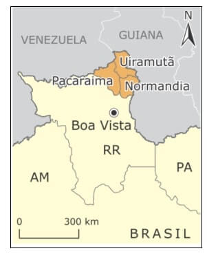
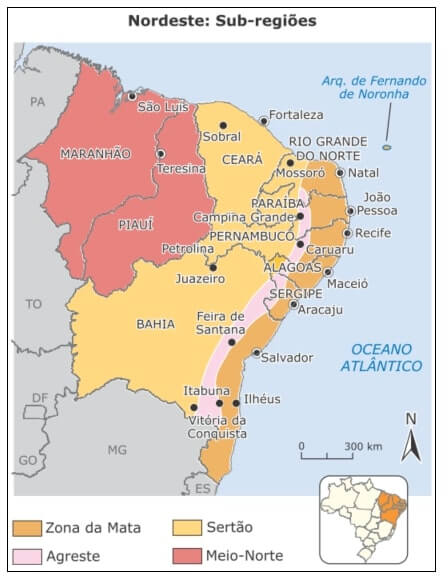
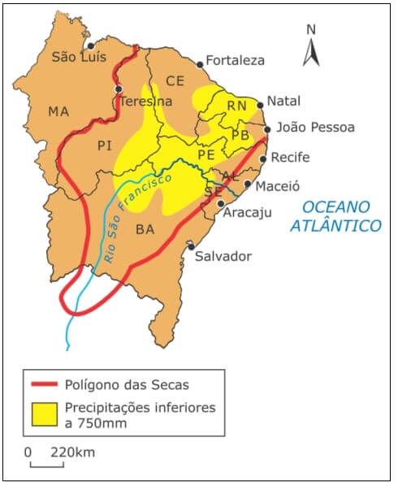
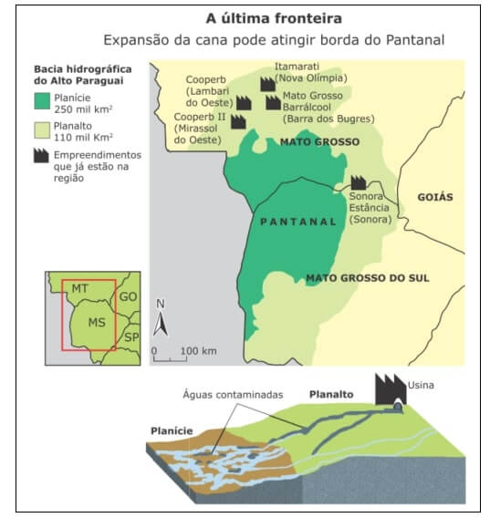
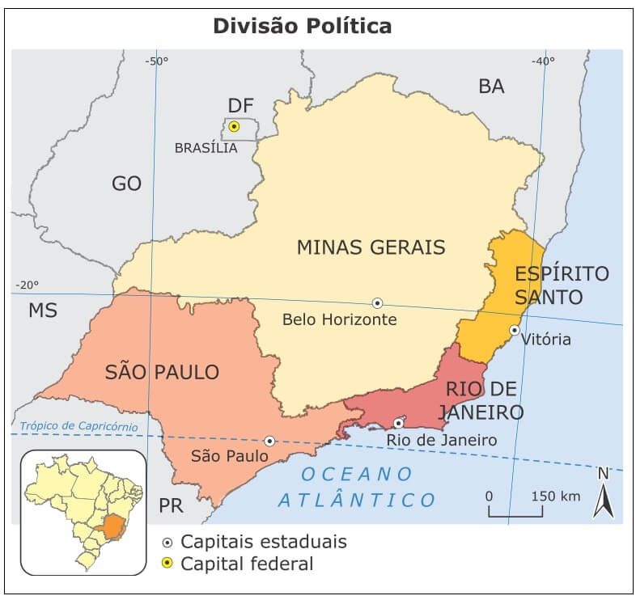

Conteúdo: Regiões do Brasil: Norte; Nordeste; Centro-Oeste; Sudeste e Sul.
Objetivo: Identificar e entender as principais características das regiões brasileiras.
Questão 01
(UFMG 2007) Considerando-se a organização geoeconômica da Região Sul brasileira, é INCORRETO afirmar que:
a) a indústria da Região Metropolitana de Porto Alegre conserva profundos vínculos com a agropecuária regional, que lhe fornece importante percentual da matéria-prima processada.
b) a proximidade geográfica do Sudeste contribui para tornar a Região Metropolitana de Curitiba importante área receptora dos impulsos da desconcentração industrial paulista.
c) o grau de modernização da agricultura sulina é predominantemente baixo, sobretudo nas sub-regiões de criação avícola e suína e nas de cultivo de soja.
d) o norte do Paraná é ocupado, hoje, pela soja e outros cultivos, que gradativamente, substituíram os cafezais
Comentário:
Colocar os comentários aqui.
Questão 02
(Cesgranrio) Em relação ao povoamento e à ocupação da terra na região Sul do Brasil, podemos afirmar:
a) A região da encosta do Rio Grande do Sul, coberta por matas, foi ocupada por imigrantes alemães e italianos, estabelecidos em pequenas e médias propriedades policultoras
b) A campanha foi ocupada já no século XX pelos descendentes dos imigrantes alemães e italianos, que se dedicaram à pecuária extensiva em grandes propriedades.
c) O norte do Paraná teve seu povoamento iniciado no século XIX por imigrantes oriundos do Nordeste para trabalharem nas grandes propriedades agrícolas dedicadas ao plantio da soja.
d) O oeste de Santa Catarina é uma área de ocupação antiga, feita por luso-brasileiros, em áreas de floresta tropical, que se dedicaram ao cultivo do café em grandes propriedades.
e) O planalto Paranaense foi ocupado, no século passado, por imigrantes japoneses, que se dedicaram à agricultura em grandes propriedades, cultivando principalmente cana-de- açúcar.
a) Verdadeiro – Os imigrantes europeus contribuíram para o desenvolvimento da economia, baseada na pequena e média propriedade rural de policultura (cultivo de vários produtos agrícolas). O Rio Grande do Sul recebeu imigrantes italianos, eslavos e alemães.
b) Falso – Não houve o desenvolvimento da pecuária extensiva em grandes propriedades, permanecendo o cultivo de grãos em pequenas e médias propriedades.
c) Falso – No Paraná, houve fluxos migratórios de italianos, alemães e japoneses e, mais recentemente, paraguaios na fronteira oeste.
d) Falso – A porção oeste de Santa Catarina foi colonizada por imigrantes italianos.
e) Falso – A agricultura foi desenvolvida em pequenas e médias propriedades, outro fator errado nesse item refere-se ao cultivo de cana-de-açúcar, sendo os principais produtos, a erva mate e o café.
Questão 03
(Mackenzie-SP 2009) No mapa, a área destacada se refere:

a) à demarcação do Projeto Calha Norte, área de litígio entre Brasil e Venezuela por essa região, que defendem, respectivamente, as reservas indígenas dos índios Pataxós e os madeireiros venezuelanos.
b) à demarcação do Projeto Jarí, área de disputa entre a reserva indígena dos Ianomâmis e as indústrias extrativas e mineradoras.
c) à demarcação da reserva indígena Raposa Serra do Sol, região de tensão entre populações indígenas e arrozeiros que ocupam a área desde a década de 1970.
d) à criação da última fronteira agrícola da Amazônia, no extremo norte do país, dentro da política de descentralização econômica, estimulando a recente implantação da rizicultura.
Questão 04
(UEAM 2011) Leia o texto.
A Amazônia é o último reduto de 60% das tribos indígenas atualmente existentes no Brasil. Para o homem do campo, sem-terra, ela representa também a última fronteira. O deslocamento das frentes de expansão sobre a Amazônia intensifica-se a partir de 1965.
RIBEIRO, Berta. O Índio na História do Brasil, 1997.
De acordo com o texto, as frentes de expansão geraram transformações espaciais na Amazônia, caracterizadas pelo:
a) aumento das atividades industriais, sobretudo da indústria automobilística.
b) contínuo êxodo rural, em consequência de sucessivos períodos.
c) aumento da emigração, causada pela falta de emprego nas frentes de expansão.
d) aumento da atividade turística, devido às paisagens pitorescas e atrativas.
e) surgimento do arco do desmatamento, com áreas agrícolas ocupando terras antes cobertas por florestas e cerrados.
Questão 05
(UEFS-BA 2010)

Fonte: Superintendência de Desenvolvimento do Nordeste (Sudene).
A partir da observação do mapa e dos conhecimentos sobre o Nordeste brasileiro, é correto afirmar:
a) O Sertão semiárido é uma sub-região de ocupação recente, baseada no pastoreio intensivo.
b) O Meio-Norte é a sub-região mais integrada no contexto econômico regional, porque sua estrutura de produção é muito dependente da agropecuária.
c) O Sertão semiárido subequatorial e tropical apresenta as mais bizarras e rústicas paisagens morfológicas e fitogeográficas, com drenagens intermitentes, relacionadas com o ritmo pouco frequente das precipitações.
d) A Zona da Mata se caracteriza por uma estrutura agrária com base nas pequenas propriedades policultoras, com aplicação do trabalho familiar, e por um grande equilíbrio social.
e) O Agreste, localizado na extremidade ocidental do Nordeste, corresponde a uma faixa de terra que se estende paralelamente à Zona da Mata, sendo uma área de transição entre o Sertão árido e a floresta Amazônica superúmida.
Questão 06
(PUC-RJ 2002) Do litoral do Ceará e do Rio Grande do Norte até o médio São Francisco, estende-se uma mancha semiárida, dentro do domínio tropical, abrangendo quase 1 milhão de km².

Em relação às características do clima e da vegetação desta área, analise as afirmativas a seguir:
I. As médias térmicas anuais elevadas e as ações dos ventos originam índices de evaporação maiores que os de precipitação.
II. As médias pluviométricas inferiores a 600 mm anuais dão origem a áreas secas bem marcadas com indícios de desertificação.
III. A semiaridez é percebida no quadro natural pela vegetação xerófila e pelo escoamento temporário dos rios.
As afirmativas CORRETAS são:
a) I.
b) II.
c) I e III.
d) II e III.
e) I, II e III.
Questão 07
(UEMS 2010) Considere o mapa intitulado “A última fronteira: expansão da cana pode atingir borda do Pantanal, para responder às questões a seguir

Fonte: Folha de São Paulo, 11 abr. 2009.
Com base nas informações do mapa, analise as afirmativas a seguir.
I. Transformações socioespaciais decorrentes da expansão do setor sucroalcooleiro na área de planalto, apresentam-se como um elemento complicador à manutenção da qualidade ambiental da Planície Pantaneira.
II. O avanço do plantio de cana-de-açúcar na área do planalto, configura-se como uma condição preocupante para a manutenção da qualidade hídrica dos rios pantaneiros; isso se deve, principalmente, ao fato de haver uma relação de interdependência nos sistemas hidrográfico e pluvial das áreas do planalto e da planície.
III. A expansão do plantio de cana-de-açúcar na área do planalto reflete o crescimento do setor sucroalcooleiro no país. Esse crescimento tem ligação direta com políticas internacionais, que priorizam a diminuição da emissão de gases que contribuem para o aquecimento global;
a) I e II apenas.
b) I e III apenas.
c) II e III apenas.
d) III apenas.
Questão 08
(ENEM 2009) As áreas do planalto do cerrado – como a chapada dos Guimarães, a serra de Tapirapuã e a serra dos Parecis, no Mato Grosso, com altitudes que variam de 400 m a 800 m – são importantes para a planície pantaneira mato-grossense (com altitude média inferior a 200 m), no que se refere à manutenção do nível de água, sobretudo durante a estiagem.
Nas cheias, a inundação ocorre em função da alta pluviosidade nas cabeceiras dos rios, do afloramento de lençóis freáticos e da baixa declividade do relevo, entre outros fatores. Durante a estiagem, a grande biodiversidade é assegurada pelas águas da calha dos principais rios, cujo volume tem diminuído, principalmente nas cabeceiras.
Cabeceiras ameaçadas. Ciência Hoje. Rio de Janeiro: SBPC. Vol. 42, jun. 2008 (adaptado).
A medida mais eficaz a ser tomada, visando à conservação da planície pantaneira e à preservação de sua grande biodiversidade, é a conscientização da sociedade e a organização de movimentos sociais que exijam:
a) a criação de parques ecológicos na área do pantanal mato-grossense.
b) a proibição da pesca e da caça, que tanto ameaçam a biodiversidade.
c) o aumento das pastagens na área da planície, para que a cobertura vegetal, composta de gramíneas, evite a erosão do solo.
d) o controle do desmatamento e da erosão, principalmente nas nascentes dos rios responsáveis pelo nível das águas durante o período de cheias.
e) a construção de barragens, para que o nível das águas dos rios seja mantido, sobretudo na estiagem, sem prejudicar os ecossistemas.
A dinâmica hidrológica do Pantanal pode ser diretamente alterada pelo desmatamento e degradação dos mananciais dos rios que o alimentam. Desse modo, a cobrança das autoridades para a conservação dessas áreas torna-se um instrumento necessário ao equilíbrio ambiental.
Questão 09
Quais as principais atividades econômicas desenvolvidas no Sudeste brasileiro?

Compare sua resposta com o comentário abaixo:
O Sudeste é a região brasileira que possui o maior dinamismo econômico do país. Sua economia é bem diversificada, abriga as maiores montadoras, siderúrgicas, empresas transnacionais, bancos, universidades, além de deter o maior parque industrial do Brasil. Os estados que compõem o Sudeste são responsáveis por aproximadamente 55% do Produto Interno Bruto (PIB) nacional.
Indústria – Apresenta a maior concentração industrial do país, bem diversificada e com grande uso de aparatos tecnológicos. Destacam-se os setores de telecomunicações, têxtil, informática, alimentício, metalúrgico, siderúrgico, petrolífero, mineração, etc.
Agropecuária – Extremamente diversificada, a agropecuária baseia-se principalmente no cultivo de café, cana-de-açúcar, soja, laranja, milho, arroz, algodão e mamona. A pecuária destaca-se na região, o rebanho bovino é o segundo maior do país.
Turismo – Outra atividade econômica de fundamental importância para o Sudeste é o turismo. As belas praias atraem milhares de visitantes, além dos eventos como o carnaval, por exemplo. São Paulo é considerado a capital brasileira do turismo de negócios, concentrando 70% do movimento nacional.
Questão 10
(UFV-MG 2010) O processo de desenvolvimento industrial no Brasil produziu uma concentração das indústrias na região Sudeste do país, sobretudo na cidade de São Paulo.
Atualmente, observamos uma tendência à desconcentração industrial e, ainda que as indústrias permaneçam no Sudeste, a intensa transformação proporcionada pelo desenvolvimento científico vem produzindo uma reorganização do espaço industrial.
O espaço geográfico brasileiro vem se tornando mais fluido e revela novas localizações para as indústrias.
A partir dessas informações, analise as afirmativas abaixo:
I. O aumento dos custos dos terrenos e imóveis nas grandes metrópoles tornou esses locais menos atrativos para as indústrias.
II. A evolução das tecnologias e infraestrutura de transporte e comunicação aumentou os custos de transferência das indústrias.
III. A pressão exercida pela força dos sindicatos que reivindicam melhorias tanto dos salários quanto das condições de trabalho contribuiu para o deslocamento das indústrias.
IV. O elevado custo da produção nos centros urbanos exigiu um novo arranjo espacial das indústrias, o que foi facilitado pelos avanços científicos.
Está CORRETO o que se afirma apenas em:
a) II, III e IV.
b) I, II e III.
c) I, II e IV.
d) I, III e IV.